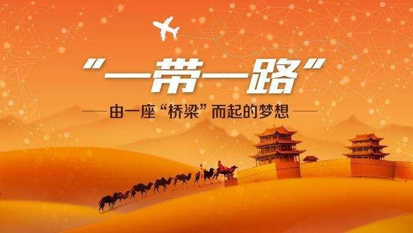
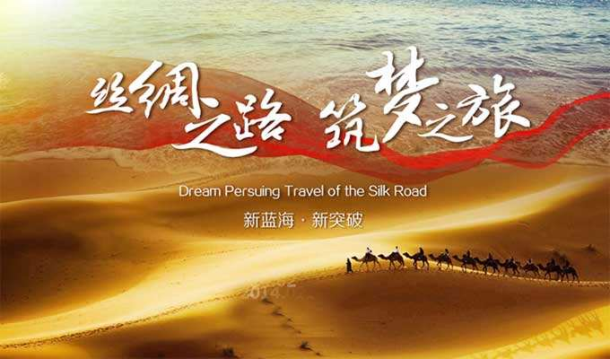
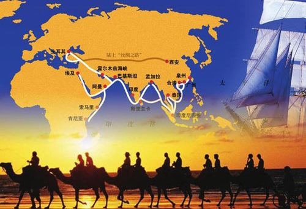

MENU
共 建 繁 荣 发 展 新 道 路
丝路筑梦
和合共生，同舟筑梦。2013年，习主席提出“一带一路”伟大倡议，在谋求自身发展的同时，为其他国家发展贡献了顺应历史潮流的中国智慧。这次浪潮几乎没有遭遇到地域的限制，这是一次全球性的浪潮。


1
2
3
时代背景

共建“一带一路”顺应世界多极化、经济全球化、文化多样化、社会信息化的潮流，秉持开放的区域合作精神，致力于维护全球自由贸易体系和开放型世界经济。共建“一带一路”旨在促进经济要素有序自由流动、资源高效配置和市场深度融合，推动沿线各国实现经济政策协调，开展更大范围、更高水平、更深层次的区域合作，共同打造开放、包容、均衡、普惠的区域经济合作架构。
共建原则
恪守联合国宪章的宗旨和原则。遵守和平共处五项原则。坚持开放合作。“一带一路”相关的国家基于但不限于古代丝绸之路的范围，各国和国际、地区组织均可参与，让共建成果惠及更广泛的区域。坚持和谐包容。倡导文明宽容，尊重各国发展道路和模式的选择，加强不同文明之间的对话，求同存异、兼容并蓄、和平共处、共生共荣。坚持市场运作。
合作重点
沿线各国资源禀赋各异，经济互补性较强，彼此合作潜力和空间很大。以政策沟通、设施联通、贸易畅通、资金融通、民心相通为主要内容，重点在以下方面加强合作。加强政策沟通是“一带一路”建设的重要保障。加强政策沟通是“一带一路”建设的重要保障。投资贸易合作是“一带一路”建设的重点内容。资金融通是“一带一路”建设的重要支撑。民心相通是“一带一路”建设的社会根基。
中国积极行动
中国政府积极推动"一带一路"建设，加强与沿线国家的沟通磋商，推动与沿线国家的务实合作，实施了一系列政策措施，努力收获早期成果。习近平主席、李克强总理等国家领导人多次与有关国家元首和政府首脑进行会晤，深入阐释"一带一路"的深刻内涵和积极意义，就共建"一带一路"达成广泛共识。
共创美好未来
共建"一带一路"是中国的倡议，也是中国与沿线国家的共同愿望。站在新的起点上，中国愿与沿线国家一道，以共建"一带一路"为契机，平等协商，兼顾各方利益，反映各方诉求，携手推动更大范围、更高水平、更深层次的大开放、大交流、大融合。"一带一路"建设是开放的、包容的，欢迎世界各国和国际、地区组织积极参与。“一带一路”是一条互尊互信之路，一条合作共赢之路，一条文明互鉴之路。
海陆丝绸之路


“一带一路”倡议提出五年来，“一带一路”建设各方面工作取得了显著成效，有力促进了我国经济社会发展和对外开放，增强了我国国际影响力和感召力。
五年来，“一带一路”取得六方面显著成效
-
一带一路”国际合作高峰论坛成功举办
2017年5月举行的“一带一路”国际合作高峰论坛是新中国成立以来由我国首倡和主办的层级最高、规模最大的多边外交平台，在国内外引起巨大反响。高峰论坛形成了五大类279项成果。截至目前，其中绝大部分已完成或可转为常态化工作，其余成果也在有序推进落实。
-
战略对接和政策沟通不断强化
我国已与100多个国家和国际组织签署了共建“一带一路”合作文件。共建“一带一路”倡议及其核心理念被纳入联合国、二十国集团、亚太经合组织、上合组织等重要国际机制成果文件。“一带一路”倡议持续凝聚国际合作共识，在国际社会形成了共建“一带一路”的良好氛围。
-
基础设施互联互通建设加快推进
设施联通是“一带一路”建设的核心内容和优先领域。五年来，高效畅通的国际大通道加快建设。中老铁路、中泰铁路、匈塞铁路建设稳步推进，雅万高铁全面开工建设。汉班托塔港二期工程竣工，科伦坡港口城项目施工进度过半，比雷埃夫斯港建成重要中转枢纽。中缅原油管道投用，实现了原油通过管道从印度洋进入我国。中俄原油管道复线正式投入使用，中俄东线天然气管道建设按计划推进。中欧班列累计开行数量突破9000列（预计本月即将突破1万列），到达欧洲14个国家、42个城市。
-
经贸投资合作成效明显
我国与沿线国家的贸易和投资合作不断扩大，形成了互利共赢的良好局面。今年上半年，我国与沿线国家货物贸易进出口额达6050.2亿美元，增长18.8%；对沿线国家非金融类直接投资达74亿美元，增长12%。目前，我国与沿线国家已建设80多个境外经贸合作区，为当地创造了24.4万个就业岗位。中白工业园等成为双边合作的典范，中国—老挝跨境经济合作区、中哈霍尔果斯国际边境合作中心等一大批合作园区也在加快建设。
-
民心相通不断深入
实施“丝绸之路”中国政府奖学金。发起成立“一带一路”绿色发展国际联盟倡议。正式开通“一带一路”官方网站，已实现联合国6种官方语言版本同步运行。多层次、多领域的人文交流合作为沿线各国民众友好交往和商贸、文化、教育、旅游等活动带来了便利和机遇，不断推动文明互学互鉴和文化融合创新。
-
金融服务体系不断完善
通过加强金融合作，促进货币流通和资金融通，为“一带一路”建设创造稳定的融资环境，积极引导各类资本参与实体经济发展和价值链创造，推动世界经济健康发展。截至2018年6月，我国在7个沿线国家建立了人民币清算安排。已有11家中资银行在27个沿线国家设立了71家一级机构。